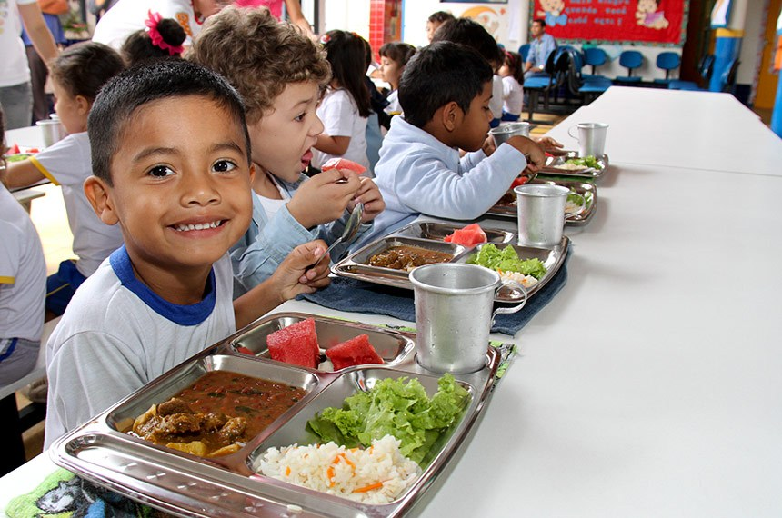

A escola tem como objetivo formar bons cidadãos e é o lugar onde aprendemos tudo, que nos torna capazes de entender o planeta e sua história, as leis da física e da química que atuam sobre nós, temos também os projetos biológicos relacionados a todas as formas de vida, é na escola também que aprendemos a nos relacionar com outras pessoas e aprendemos a ter responsabilidade com nós mesmo, portanto a escola é onde adquirimos conhecimentos importantes para a nossas vida.
O Programa Saúde na Escola (PSE), foi criado em 2007 com intenções políticas de promover nas escolas saúde e educação para crianças, adolescentes, jovens e adultos que fazem proveito da educação pública brasileira.
A articulação intersetorial das redes públicas de saúde e de educação e das demais redes sociais para o desenvolvimento das ações do PSE implica mais do que ofertas de serviços num mesmo território, pois deve propiciar a sustentabilidade das ações a partir da conformação de redes de corresponsabilidade. Implica colocar em questão: como esses serviços estão se relacionando? Qual o padrão comunicacional estabelecido entre as diferentes equipes e serviços? Que modelos de atenção e de gestão estão sendo produzidos nesses serviços? (MORAIS, 2018)
Uma alimentação saudável é fundamental em todas as fases da nossa vida, mas em cada fase a alimentação tem uma importância diferente. Quando somos crianças, nossa alimentação é focada no crescimento dos ossos, pele, músculos e órgãos. É nessa fase que brincamos, pulamos, aprendemos a ler e escrever , entre várias outras coisas, por isso uma alimentação balanceada é insubstituível pois é necessário energia para todas as atividades propostas
